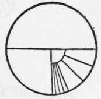
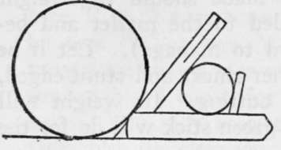
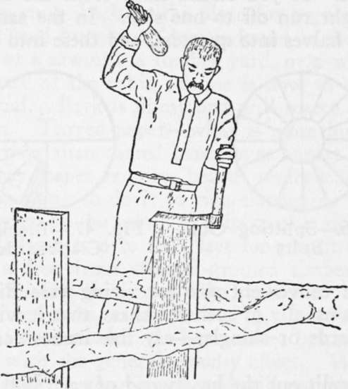
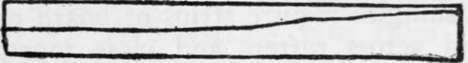
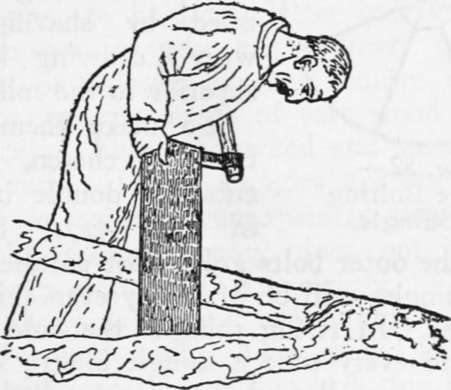

Axemanship. Qualities And Utilization Of Wood. Part 5
Description
This section is from the book "Camping And Woodcraft", by Horace Kephart. Also available from Amazon: Camping and Woodcraft.
Axemanship. Qualities And Utilization Of Wood. Part 5
But there is more than this in picking a boardtree: the wood should be not only separable but springy. The woodsman will tell you that he "senses" this; and he does, to the extent that his choice is guided by no rule nor process of reasoning. Twice out of three times he is right when he says "That tree '11 do;" nine times out of ten he is right when he says "That tree 's no good." Experience has taught me that a tree with a certain "look" is likely timber, but I can't, for the life of me, describe that look. You may have to split a big block out of a tree, test its cleavage, and try several other trees before you find a good one. This is bad practice, but not so bad as felling, sawing off a cut, and then leaving the tree to waste utterly.
Clapboards
To rive clapboards or shingles from the green tree is now a lost art, Outside of the backwoods. Not one carpenter in fifty, nowadays, can show you how. Yet it is an art well worth knowing for hunters and others who may want to go, season after season, to the same locality, and wish a snug shack on the place for regular quarters. Since good hunting seldom is found in the neighborhood of a sawmill, a lumber yard, or a wagon road, the crux of the cabin scheme is how to get roofing material. Bark is flimsy and will scarce outlast the season. Tarred paper—what is more hideously incongruous than tarred paper over honest log walls? Anyway, paper requires boards underneath.
The thing to do is to rive clapboards from trees that grow on the spot. A clapboard is simply a thin board, from two to four feet long, split or worked with a froe from straight-grained timber. It is a little thicker along one edge than the other, being split from bolts, as shown in Fig. 47. A clapboard roof is dependable. It harmonizes better than any other with the general woodsy effect. When properly laid, it is storm-proof, and will not cup. It will last a generation.
The tools required are few: An axe or two, a crosscut saw, a pair of steel wedges, and a froe. A maul for the wedges and gluts, and a mallet of similar shape, but smaller, for the froe, are made on the spot. The froe is a tool that seldom is seen outside of the backwoods. Any blacksmith on the edge of the wilderness can make one for you. Its shape is shown in Fig. 49. The blade should be straight (old ones that have yielded to the mallet and become swaybacked are hard to manage). Let it be about 14 inches long, rather thick, and stunt-edged, as it is for splitting, not cutting. Its weight will be about five pounds. A green stick will do for the handle.
When the right tree is found, throw it in the best place for working up, and saw off a cut of 2l/2 to 3 feet. The butt cut usually is not so good as the upper ones, being tougher. Turn the cut up on end, and, with a single-bitt axe and mallet, mark an indentation straight across the center of the block.
Do not tap hard until you come to the end of the line; then strike vigorously, and the block will fall in halves. If you struck hard from the first, the split might run off to one side. In the same way, split the halves into quarters, and these into bolts or billets of convenient size for riving (see Fig. 46). A bolt is usually of such thickness, that it will make eight boards or shingles—say five inches across the outside.
Fig. 46. Splitting Out Bolts.
Fig. 47. Block for Clapboards.
Now split out the heartwood of each bolt by laying the axe across and tapping it. Heartwood is useless, for it won't split well. In some trees the heart is so tough that it is advisable, instead of halving and quartering your cut, to just split in toward the cut, all around, to bolt size, and then knock out the bolts by driving the axe in at right angles to the cuts, leaving the heart as one solid core (Fig. 47). Skin off the bark, and your bolts are ready to rive.
The next thing is to make a brake. This may be simply the fork of a limb, as in Figs. 49 and 51, Another way is to lay two blocks against the prostrate trunk of your board tree, at right angles to it, like fire dogs, and a yard or so apart; on them lay a small log, parallel with the trunk, and drive stakes outside this "roller" to keep it from rolling more than six or eight inches away from the trunk (Fig. 48). The office of the brake is to clamp one end of the bolt while you are riving with the froe.
Fig. 48. Brake for Riving Boards.
Fig. 49. Splitting with a Froe.
Now take up your froe. Stand one of the "bolts on end, lay the froe's edge accurately along the center of one end, and split the bolt in twain by tapping with the mallet and springing your cleft apart with the froe (Fig. 49). Take one of these halves and rive it similarly into two equal parts.
At this stage (more surely at the next one) you must learn a new trick—the difference between riving and mere splitting, and how to govern the rift. The wood has a tendency to "run out" more toward one side than the other. If you went on just foreing the froe down, the result would be a botch (as in Fig. 50). To prevent this, turn the block so that the thicker side is down, lay its lower end in the brake, open the cleft until you can insert your flat left hand (the froe will prevent pinching), and then bear down hard on the bottom (thicker) section while you work the froe gently up and down.
Fig. 50. "Run-out" Rift.
Fig. 51. Springing the Rift.
Continue to:
- prev: Axemanship. Qualities And Utilization Of Wood. Part 4
- Table of Contents
- next: Axemanship. Qualities And Utilization Of Wood. Part 6